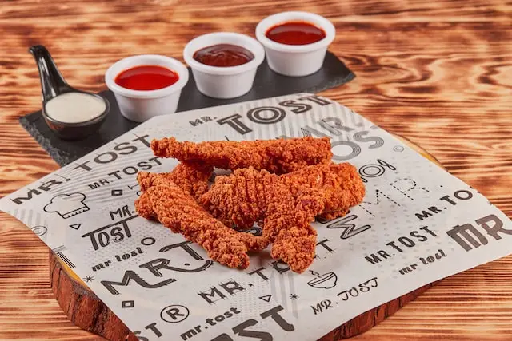

Air fryer chicken strips
Description
Classic finger food which we enjoy with a dipping sauce, such as Comeback Sauce on this site. Sliced, they're also a tasty salad topper. Air fryers do a great job of cooking frozen food, no need to thaw, and this is a perfect weeknight meal, on the table in 12 minutes.
Ingredients
- 25 ounces frozen cooked, breaded crispy chicken strips (such as Tyson®)
Steps
- Set the air fryer temperature to 380 degrees F (180 degrees C).
- Place frozen chicken strips in the air fryer basket, without touching or overcrowding.
- Cook until crispy, 11 to 12 minutes. The color will not change much. You may have to cook in batches depending on the size of your air fryer, and cooking time may vary depending on the brand and size of your air fryer.
- Remove from the air fryer and serve immediately.